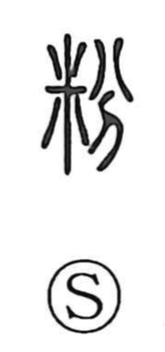

紛

Uncategorized
Kun: magireru, magirasu, magirawasu, magirawashii | On: fun
to get out of order ・ to get entangled ・ to be mistaken for ・ to mix with
Explanation
紛 is a phono-semantic character: the thread element evokes strands, while 分 serves as the phonetic, giving the on reading fun and originally expressing the idea of cutting or dividing. The character pictures many threads in disorder, snarled and entangled. From this image it came to signify a state of things being out of order, getting tangled, mixing with others and being mistaken for them, and by extension the acts of diverting or confusing.